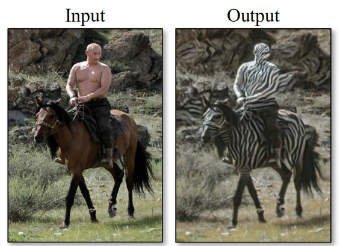
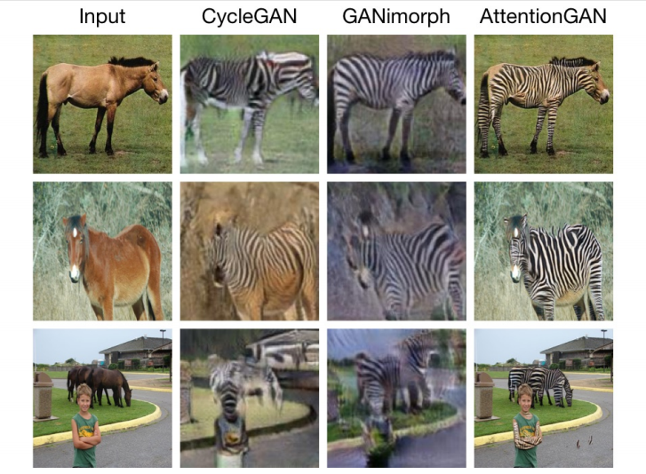
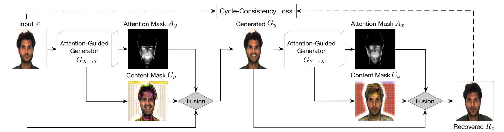
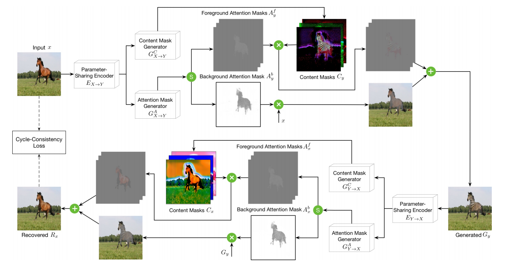

一种加入注意力机制的思路
这篇的方法比较复杂，不太看好，所以就简单做个笔记了。
论文中指出类似CycleGAN，UGATIT这种使用unpaired训练数据的生成模型才是未来，但是因为缺乏配对的标签，这种模型普遍会遇到一个问题，就是在图像迁移时模型不能有效地区分图片中的前景与背景，从而导致失败的迁移，比如CycleGAN论文中的这幅图：

上面那张图中，马应当是前景，而除了马以外的其它像素都应当被认作是背景，不参与图像翻译。现有的论文中，一个解决办法是把图片主体扣出来，输入模型得到结果后再传回图像，但是很难收集到标注信息；另一个方法是训练出一个能够扣出图片的模型（如FCN语义分割网络），但这样模型会变得巨大。作者提出加入注意力机制使得模型能够识别出前景与背景，从而提高生成图片质量。下图是与其它模型对比的结果，可见图中的小男孩被分到了背景之中，不参与图像翻译：
作者提出了2个框架，其中第一个框架还是比较简洁的。生成器同时产生一个content mask（图像翻译的结果）和一个attention mask（用来标记前景，为一个灰度图像），将二者与原图做一个简单的加权求和后即可获得最终的结果。这样做的直觉是很显然的，经过加权处理之后，可以让content mask只在attention mask的区域中起作用，在attention mask之外保留原图的其它像素。

这种模型较为简单，有一定的局限性：在涉及到小范围变换的任务上效果较好（例如改变表情），但当涉及到较大变换（例如马变成斑马）时生成器不能够完成迁移任务。在此基础上，作者又提出了比较复杂的第二个模型。
与第一个模型相比，这个模型主要做了2处改变。第一处：使用两个不同的CNN分别产生content mask与attention mask；第二处：attention mask分为foreground mask与background mask，分别标记背景与前景。其中前景图与content mask叠加，背景图与原图叠加，再将二者叠加得到最终结果。考虑到前景图在图像翻译中的重要性，为了提升生成图片质量，AttentionGAN中前景mask与背景mask的比例为n-1:1，同时也需要对应的n-1张content mask。判别器与生成器引入注意力的原理差不多，不再赘述。我个人认为这种将内容与注意力mask叠加的思路还是不错的，只是模型2略显复杂。减少这种效果较好的生成模型（包括UGATIT，它的模型也比较大）的计算量可能是今后一个方向吧。